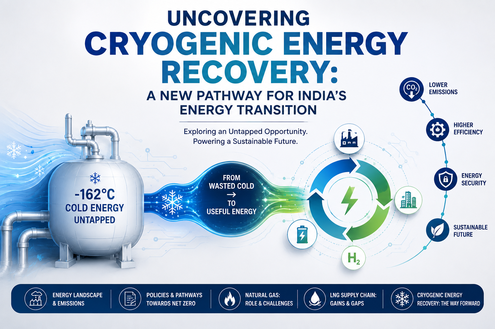

This article series takes a deep dive into the current landscape of India’s energy sector,
examining its evolving energy demand, sectoral emissions, technological challenges, and
emerging opportunities. It explores how cryogenic energy recovery can contribute to addressing
some of these challenges from both technical and economic perspectives.

The first chapter examines how energy is consumed across different sectors of the Indian
economy and the emission-related challenges associated with these energy uses. It then
provides an overview of the policy frameworks and regulations adopted by India to address
these emissions. The discussion subsequently turns to the role of natural gas in reducing
sectoral emissions, followed by an examination of the challenges associated with the existing
natural gas supply chain.
Finally, the series introduces the potential of recovering cryogenic energy from imported
liquefied natural gas (LNG) and discusses how this otherwise underutilized energy resource
could contribute to improving the efficiency and sustainability of India’s energy system.
Subsequent articles build upon this foundation to explore the technical and economic aspects
of this emerging energy-recovery pathway.
The articles are best read sequentially, as the discussion and conclusions of each chapter
provide the context for the topics that follow. This helps ensure that the connections and
deductions developed across the series are interpreted in their intended context.
Suggestions, comments, and ideas for improvement are always welcome.
India's energy sector at a glance
India is the third largest emiiter of greenhouse emissions accounting for 8% (3 billion tonne) of the total GHG emissions worldwide
[Worldometer]. The energy sector alone contributes to more than 75% of these emissions [ MoEFC,2025 ].
Within this sector, the carbon emissions from burning of fossil fuels for electrcity and heat generation is the largest contributors.
Currently, the share of coal based electricity stands at an alarming value of nearlyu 70 % while the transition fuel, natural gas contirbutes to less than 1% of India's total electricity production. Thanks to the increased penetration of solar and wind which together contribute to about 18% of the generation, the grid has become less reliant on coal. Consequenlty, the recent years, particularly from 2023-2005, the CO2 emissions of power indsutry have fallen and lead to a slower growth rate of overall emissions.
[ Carbon brief].
Power sector by fuel use
The next larger culprits of GHG emissions is agriculture, manufacturing and transport industry.
The agro and allied sectors in India contribute the largest share (17-18 %) to India's GDP [ IFAD] with 54.6 % of its people involved directly or indirectly with agriculture.
Activities such as fertilize use, livestock manure management, rice cultivation and field burning of agricultural residuals lead to substantial levels of CH4, N2O and Co2 emissions [ Katina 2023].
In the similiar lines, the rapid industrialization and urbanization has lead to increased emission levels from manufaturing and transport sector respectively.
Cooling related emissions
India's cooling demands arise from industrial process cooling, cold chain (food and medicine storage), commerical HVAC, domestic air conditioning and refrigeration. A vast majority of industrial refrigeration systems still use HCFCs, which are known to be ozone depleting. Doemstic cooling, on the other hand, moved away from HCFCs to HFCs which are non zone depeleting but possess high GWP [CEEW].
Thus, cooling contributes to 3-4% of total GHG emissions in India, through the direct demand for electricity and fugitive leaks of HFCs and HCFCs. On average cooling accounts for 10% of the resedential power consumption while this number can reach peak values of 45% during summers [ORF]. By 2035, it is estimated that the contribution of GHG emissions from cooling will be doubled, unless the use of HFCs and HCFCs is controlled.
The perceived growth in demand arises from factors like urbanisation, rising income levels, population growth, and climate change. Amidst these factors, the potential demands of data center sectors goes unnocticed. With massive GW scale data center capacity additions set to take place, the cooling requirments
will add to Inida's cooling vows.
Clean energy policy
Ever since becoming a party to the Montreal Protocol (MP) 1987 , India has phased out the use of production and consumption of various Ozone Depleting Substances (ODS) including CFC's which dominated the cooling sector [MoEFCC]. According to the decisions made in the 19th MoP of the Montreal Protocol, the phase out of HCFCs which replaced the CFCs, should be achived by 2040 [UNEP,2007]. India seems to
is still in its early stages of this phase out [ MoEFCC, 2023 ] [ CEEW].
As per the agreement, Indian markets have seen a shift towards the use of HFCs which are non ozone depleting compounds. However, HFCs have high Global Warming Potential and therefore any form of fuigitive emission can contribute signficantly to the total emissions of the country. If the current levels of HFC use are not controlled, it could potentially negate the
climate change benfits achieved through phase out of CFC and HCFCs. Therefore, the Kigali Amendment to MP 1987 has laid out plans to phase of HFCs as well. India will complete its phase down of HFCs in 4 steps from 2032 onwards with cumulative reduction of 10% in 2032, 20% in 2037, 30% in 2042 and 85% in 2047.
[ MoEFCC, 2023 ].
The India Cooling Action Plan (ICAP) was launched in March 2019 by the Ministry of Environment, Forest and Climate Change (MoEFCC). It provides a 20-year roadmap to ensure that the country’s growing cooling needs are met in a sustainable, affordable, and efficient way [ IMPRI "].
Natural gas supply chain: Current scenario
The transition from a coal dependent, emission heavy energy sector to a emission free renewable energy based sector requires remarkable changes in India's energy infrastructure and technological advancments. Natural gas, which gives lesser CO2 emissions on combustion has been touted as a bridge fuel in the quest to realise an emission free energy sector.
By replacing coal with NG, a slow down in the growth rate of emissions is perceveid. This helps to keep emission under control until the bottlenecks with renewable sector are solved and made grid reliable. This serves well in ahcieving short terms goals of moving away from coal based power and also the long term net zero strategy.
Currently, the share of domestic NG in India's energy sector marginally outweighs the imported LNG share (49%). The natural gas consumption is dominated by sectors such as city gas distribtion, transport, agriculature and fertilizers.
Qatar, UAE and USA are the top three LNG suppliers to India while crude oil supply is dominated buy Russia [ Reuters].
Natural gas in CGD
The largest energy related consumption of natural gas comes from city gas distribution. This includes the use of CNG (for transport) and PNG (for commercial heating and domestic cooking). Over the recent years, these applications have seen an increased adoption of
natural gas , driven by goventment intiatives to use CNG for public transport vehicles and push to switch to PNG from LPG.
The use of NG , paritcularly as CNG instead of petrtol, diesel for transport, and PNG in domestic cooking instead of LPG, certainly helps to reduce the growth rates of emissions. However, only increassed adoption of
NG in power sector from the current levls of 13% NG usage to generate 1% of India's total power, is critical to acclerate the reduction of emission growth rates. This strateygy has already been sucessful in all the emssion intensive economies (except China) such as USA, Russia, Francew which have more than between 15-40% of natural gas based power generation.
Therefore, India has set a taregt to use natural gas to cover 15 % of power demands by 2030.
To reach this target, India has to first address multiple issues , both technical and policy related, concering the natural gas supply chain and the NG based power generation ecosystem. Some of these challenges are as follows :
1. Stagnant domestic NG production and its cascade effect on importing expensive LNG for meeting energy needs
2. Low Priority allocation to NG based power meant that the acess to low cost APM fuel is resticted. Subsquenlty, price/kwh increases.
2. Higher LCOE for RLNG based power in comparision to coal based
4. Price fluctuations in LNG due to geopolitical tensions
5. Insufficient on ground storage facilities
IEEFA observes that the lack of affordable domestic NG is the prime resaon for low NG based power generation. The concerned report also mentions that by 2009, the capcacity of the production faciltiies were ramped up inorder to exploit the then recently discoverd gas wells in the Krishna-Godavari basins [ MoPNG1 ]. However, the production fizzled out beyond 2013 and reached low values around 2017-18. Therefore, power plants had to rely on expensive import LNG. This drove up the cost of electricity generation as high as 14 Rs/ kwh (as opposed to 4 Rs/kwh of coal based power) and thus uncompetitive.
This affect, coupled with the low priortity allocation of available NG to powerp lants eventually reduced PLF's of the NG power plants. The PLF went down to values of about ~14% whilst the plants were only confined to ramp up and peak demand applications. With redcuing demand in power sector, the LNG regasification facilities reamin under utilised as of today. [IIEFA]. This underutilisation has lead to a regulation in approvals in newer capacity additions.
These facts indicate:
India might have to still rely on LNG for power generation, although, the capacity addition and under utilisation challnges must first be addressed.
The price sensitive Indian end user can always switch to cheaper fuel if NG power becomes expensive. So, it is critical to figure out a way to control LNG based elecricity costs. In this regard,
suggestions were made to use LNG and solar power in a synchronous manner make the electrcity prices competitive.
Finally, low cost NG gas should be made avialble to power plants. This means cutting down the allocation to the non energy sector- i.e, fertilizer prodcution. The resources allocated here could be shifted if ammonia production is
done through green hydrogen instead f grey hydrogen from natural gas.
Considering the scale of upliftment required in the power sector, it is unlikely that the 2030 power sector targets can be met.
Cryogenic energy recovery
The current research focused on characterizing the velocity and thermal temperature profiles in the film boiling regime of the chilldown phenomena.